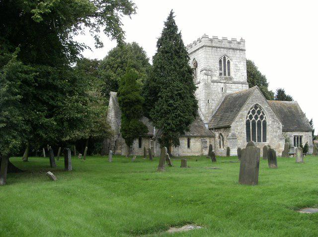
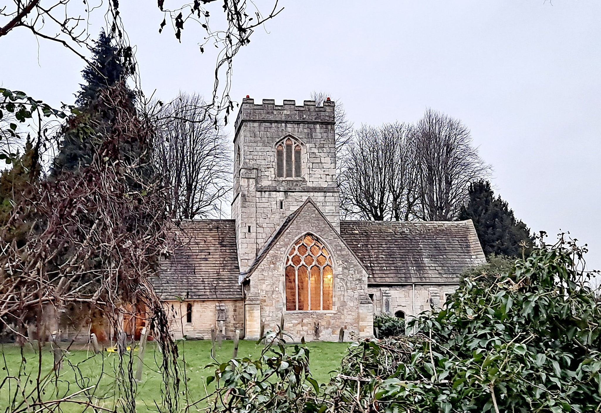

St Mary's Church
The original architecture of the building shows that it dates from the period 1225-1250.
The church consists of a long nave, north and south transepts with a south aisle, a south porch and a central tower above the crossing. The cruciform structure is said to be rare in the district and is reputed to be one of the smallest completely cruciform churches in the country carrying so large a tower. John Betjeman mentions it in ‘A Guide to English Parish Churches’. Today it is dedicated to St Mary but at some time it was originally dedicated to St John the Baptist as indicated by the step down at the entrance. It can also be found by this name on old OS maps.


Opening Hours and More
The church is open most days for visitors during the daytime, between the hours of approximately 10am to 4pm. Visitors are always welcome to come to look around, to take some time out of their day, to pray, or just find some peace and quiet from the busyness of life.
There is a service almost every Sunday at 10am. Though this can change for some special occasions. So please do keep an eye on the front page of our benefice website for any updates.
The usual pattern of services on each Sunday of the Month is:
- 1st - All Age Family Worship
- 2nd - Holy Communion
- 3rd - Morning Worship
- 4th - All Age Holy Communion
- 5th - (when applicable) - please check our website or Facebook page.
Our regular Sunday services always include hymns or songs, and music.
There is also a Traditional Morning Prayer service every Wednesday at 10:30am. Most of our services are followed by refreshments, and a time of chat and fellowship. We also welcome families with children to ALL of our services.
Or do get in touch if you'd like to know more!
Links relating to the Church
St Mary's Church is part of the Tadcaster Benefice, which includes four churches.
- St Mary's Church page on the Tadcaster Benefice site
- St Mary's Church page on Facebook
- Tadcaster Benefice site
- Tadcaster Benefice page on Facebook
Keep in Contact
You can get in touch with Reverend Paulie via email.
Enquiries about baptisms, weddings, etc should be booked through the Tadcaster Benefice administrator
e-mail: stmarystadcaster@gmail.com
Tel: 07545 516949